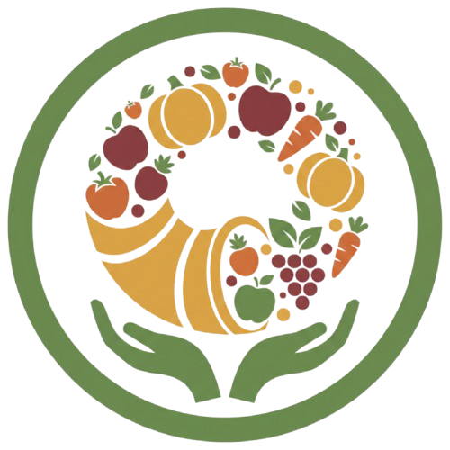
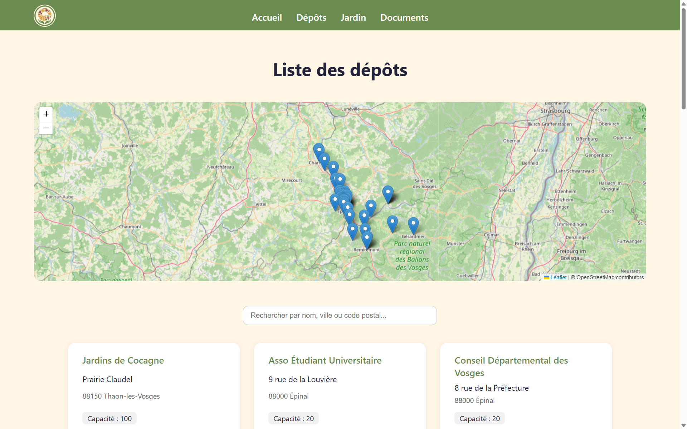
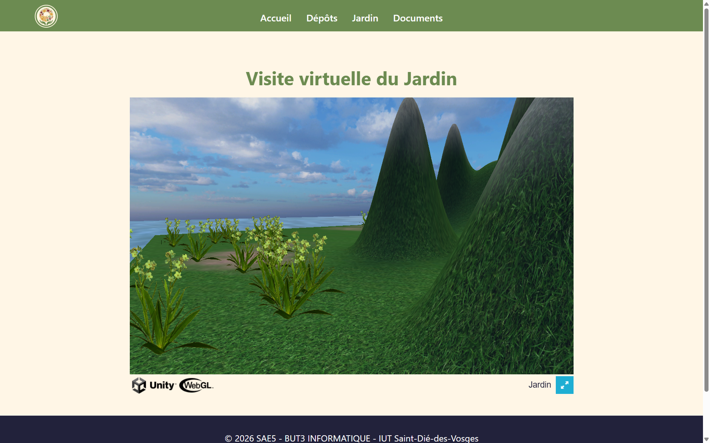

SAE5 - Application de Gestion des Dépôts
Plateforme web complète pour la gestion et la cartographie d'un réseau de points de collecte collaboratifs

Aperçu du projet


Description du projet
SAE5 est une application web moderne développée en Flask (Python) pour gérer et visualiser un réseau collaboratif de dépôts de partage et de collecte dans la région des Vosges.
Cette plateforme centralise les informations sur 25+ points de collecte, offrant une interface interactive avec cartographie géolocalisée, recherche, et gestion documentaire. Le projet englobe l'architecture complète d'une application web moderne : backend RESTful, frontend dynamique, base de données relationnelle, et containerisation Docker.
Ce projet répond à un vrai besoin : centraliser et rendre accessible le réseau de dépôts collaboratifs pour les utilisateurs finaux. Au-delà de l'application elle-même, l'objectif pédagogique était de maîtriser l'architecture complète d'une application web modélisée et de comprendre les défis de l'intégration frontend/backend, ainsi que les bonnes pratiques DevOps.
Technologies utilisées
Fonctionnalités clés
- Modules & Endpoints : Landing page d'accueil (/), liste des dépôts (/depots) avec affichage tabulaire, espace jardin (/jardin) et section de téléchargement des rendus (/documents).
- Recherche et filtrage : Système dynamique côté client (depots-search.js) pour filtrer les dépôts en temps réel par nom, ville ou code postal.
- Cartographie interactive : Visualisation WebGL (depots-map.js) des dépôts avec géolocalisation fluide basée sur les coordonnées longitude et latitude intégrées au modèle.
- Données gérées en BDD : Stockage structuré de chaque point de collecte (nom, capacité de 20 à 100 emplacements, adresse complète, coordonnées GPS).
- Données brutes : API REST exposant de manière transparente les données géolocalisées au format JSON via la route dédiée.
- Automatisation & Pipeline : Initialisation automatique de la BDD au démarrage (init_db.py) et intégration continue via GitHub Actions pour la validation.
Défis techniques rencontrés
- Architecture complète & Intégration : Coordination et passage correct des données du backend Flask (templating Jinja2) au JavaScript frontend au format JSON.
- Gestion des données & Modélisation : Conception du schéma SQLAlchemy pour stocker la géolocalisation, la capacité, et assurer l'intégrité ainsi que la population automatique (idempotence) de la BDD.
- Interface dynamique & Cartographie : Utilisation performante de WebGL pour afficher plus de 25 marqueurs géolocalisés de manière fluide et réactive côté client.
- Conteneurisation & Routage : Gestion rigoureuse des chemins d'accès au sein du conteneur Docker, configuration des routes statiques pour la pile de fichiers du dossier static/, et gestion cohérente des URLs relatives.
Compétences développées
Front-end Web
HTML5, CSS3, JavaScript Vanilla (manipulation du DOM), interactions en temps réel, intégration WebGL pour cartographie
Back-end Web
Python 3.12, Flask 3.1, Architecture MVC, Routage, API RESTful, Sérialisation JSON, Serveur WSGI Gunicorn
Base de Données
SQLite, SQLAlchemy (ORM), Modélisation relationnelle, Pattern Factory pour l'initialisation automatique, persistance et intégrité des données
Déploiement
Docker (Containerisation complète, images slim), DevOps basique, CI/CD avec pipelines GitHub Actions, gestion des environnements local vs production
Conclusion du Projet
Ce projet d'application de gestion des dépôts collaboratifs constitue une expérience complète de développement full-stack ancrée dans un besoin concret. Il m'a permis de consolider la maîtrise du cycle requête-réponse HTTP, de concevoir des architectures modulaires et scalables grâce à la conteneurisation, et de proposer une UX interactive riche incluant de la géolocalisation.
L'accent mis sur les bonnes pratiques DevOps (Docker, Git, GitHub Actions) couplé à une documentation soignée (README, commentaires, rapports PDF) m'a permis de comprendre les enjeux essentiels de la maintenance applicative et du déploiement agile en production.